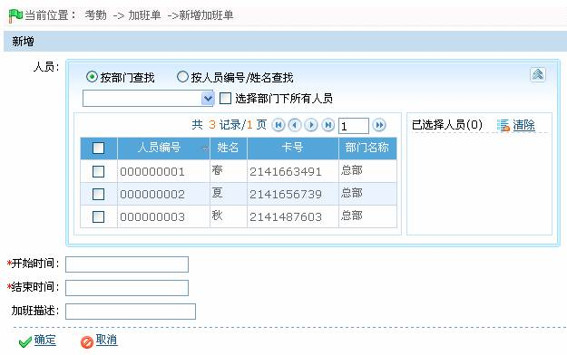
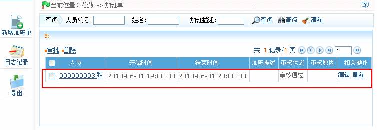

7.6.4 加班单
当员工存在加班情况时，用户可以在系统中添加加班单。经过审核后，该加班单即生效。
1、单击【考勤】 【加班单】，进入加班单页面。
【加班单】，进入加班单页面。
2、单击加班单页面上的【新增加班单】图标，进入新增加班单页面：

根据需要进行参数设置，具体设置方法如下：
人员：选择需添加加班单的人员，可多选，人员的选择，请参见附录1 常用操作中的1. 人员选择。
开始时间、结束时间：设置加班的开始和结束的日期与时间，日期与时间的设置方法，请参见附录1 常用操作中的8. 选择日期与时间。
加班描述：根据需要输入加班描述。
2、设置完成后，单击【确定】按钮保存，并返回加班单页面，此时加班单列表中，将显示刚新增的加班单。

-
 审批加班单
审批加班单
 注意：系统管理员添加的加班单，添加成功即审核通过。员工在员工自助系统添加的加班单，须管理员审批通过后方能生效。
注意：系统管理员添加的加班单，添加成功即审核通过。员工在员工自助系统添加的加班单，须管理员审批通过后方能生效。
（1）、员工自助添加成功的加班单，未审批前的审核状态为“申请”。
（2）、审批加班单的具体操作步骤同7.6.2 请假的审批请假部分一致，此处不再重述。